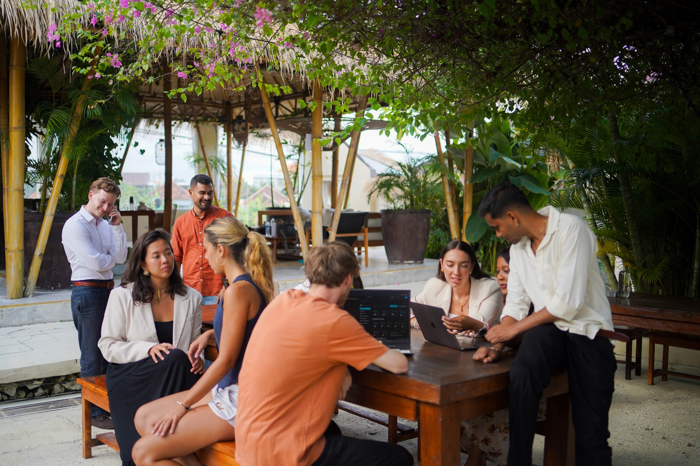
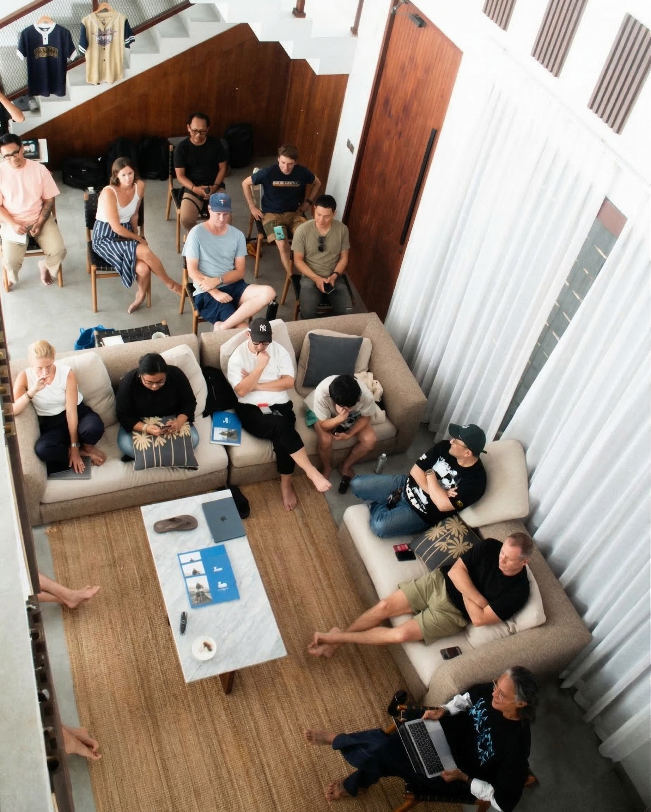
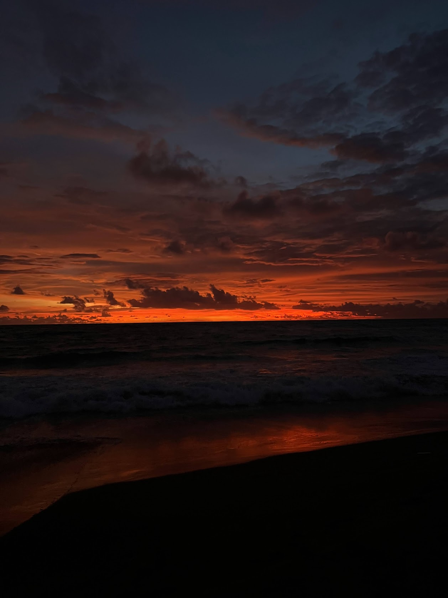
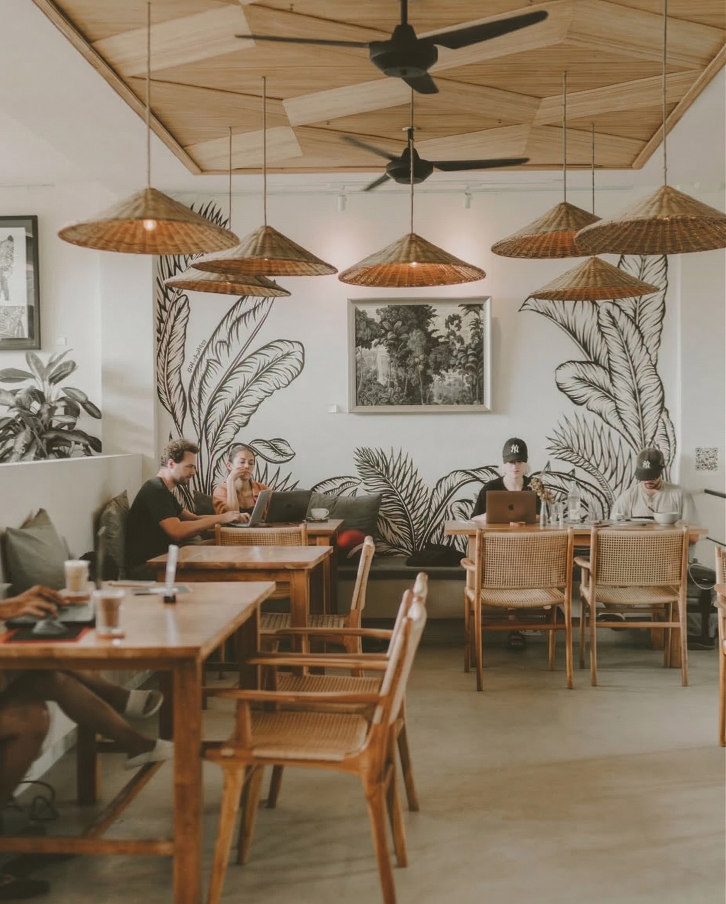
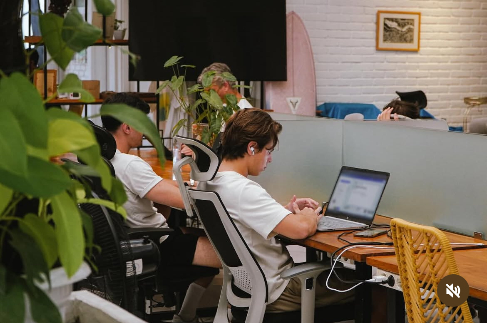

For students who already need to complete an internship
Your required internship semester. In Bali or Sri Lanka — with everything handled.
Most students complete their required internship in the Netherlands. Some choose Bali or Sri Lanka instead — lower living costs, stronger exposure, and every logistical detail sorted before you fly.
Credit-ready placements aligned with your university's internship requirements — at startups, agencies, and hospitality brands.
Placement, visa, housing, airport pickup, and orientation week — all arranged before you travel.
Monthly living costs from €440 in Bali — typically less than a semester in Amsterdam or Rotterdam.
Free application · No commitment · Reply within 2 business days
Placed students from Maastricht University, UvA, Erasmus, and more.

Credit-ready placement
Placements aligned with your university requirements, field, and internship schedule
Lower cost of living
Typical monthly budget in Bali: €440–€630. Often less than the Netherlands.

Full support included
Visa, housing, airport pickup, and orientation week — sorted before you arrive
30+
Interns placed
20+
Partner companies
5+
Dutch universities
100%
Credit-eligible placements
Students join from
Maastricht UniversityUniversiteit van AmsterdamErasmus UniversityTilburg UniversityVrije UniversiteitHogeschool Rotterdam
Numbers reflect both Bali and Sri Lanka placements to date. Updated each intake.
Every photo on this site was taken by our own team — no stock imagery, no filters.
A smarter use of your required semester
You need to do this internship anyway. In Bali, most students do it for less.
The average Dutch student spends €900–€1,400 per month in Amsterdam, Rotterdam, or Utrecht. In Bali, total monthly living runs €440–€630 — covering private accommodation, transport, food, and daily life. You need to do the internship anyway. Here, you often do it for less.
Application fee
Free to apply
There is no cost to submit a profile, speak with us, or receive an initial fit review for the Bali program.
Step-one application and profile review
Intro call and initial fit conversation
No payment required until you decide to move forward
Program fee
Placement and relocation support program
The program fee covers placement matching, visa guidance, airport pickup, orientation week, and on-the-ground support throughout your stay. Monthly rent and personal spending are separate.
Placement matching and company introductions
Onboarding, arrival planning, and local support
University and admin coordination where needed
Included
What the program includes
From application to arrival, we handle the logistics so you arrive ready for the internship — not still planning it.
Placement support and host company matching
Pre-departure coordination and visa guidance
Airport pickup, orientation week, and ongoing local support
Budget separately
Costs to plan outside the program fee
These are the same costs you'd have anywhere — accommodation, food, travel. In Bali, they tend to run lower than in a Dutch city.
Flights, insurance, and visa-related costs
Accommodation and everyday personal spending
Optional travel, activities, and extra lifestyle costs
Monthly expense
Typical Bali range
Private accommodation
Starts from €180
Scooter rental
€50 – €70
Petrol
€10 – €20
Meals at local restaurants
€70 – €120
Coffee / cafes
€20 – €40
Gym
€15 – €30
Surf lessons / activities
€40 – €70
Weekend trips
€40 – €80
Local transport
€15 – €30
Estimated monthly total
€440 – €630
Monthly living cost depends on room standard, transport choice, and how often you eat out. Use this as a Bali planning range, not a fixed bill.
Bali — estimated monthly total
€440 – €630
Private room, scooter, food, and daily life
vs
Amsterdam / Rotterdam — typical student budget
€900 – €1,400
Room, transport, food, and day-to-day spending
You need to complete the internship semester regardless. In Bali, the same period often costs significantly less — while the experience, exposure, and career proof tend to be stronger.
The program fee covers placement support and logistics. Keep it separate from flights, insurance, visa costs, and your monthly living budget when comparing options.
Everything arranged so you arrive ready to start — not still planning.
The program fee covers placement matching, visa, airport pickup, orientation week, and ongoing support throughout your stay. You pay monthly rent directly — everything else is handled before you fly.
Internship Placement
Matched to a curated host company in Bali or Lombok that fits your field and study goals.
Visa Arrangement
Send us your passport — we handle all visa paperwork, applications, and documentation.
Housing Assistance
We find accommodation options and present them to you. Monthly rent is paid directly by you.
Airport Pickup
We pick you up on arrival day so your first hours in country feel calm and organised.
First Day Drop-off & Local Support
We drop you at your internship on day one and remain available throughout your placement.
Orientation Week
Your first week is a full orientation — neighbourhood, transport, culture, and a group dinner with your fellow interns. You start your internship in week two, settled and ready.
All of the above is included in the program fee — except monthly rent, which you pay directly to your accommodation.
How it works
From first application to your first week on the ground.
The process is structured, transparent, and designed to move you from interest to placement without months of uncertainty.
01
Apply
Tell us your field, timing, and what kind of internship you want. The application is free, takes about 10 minutes, and gives us enough context to review your fit.
02
Intro call and matching
We speak with you, refine the brief, and match you to host companies that fit your study background, skill set, and preferred working environment.
03
Placement and preparation
Once the match is right, we support the paperwork, pre-departure planning, and arrival coordination so the move feels clear before you fly.
04
Arrive and start well
You land with structure around you: housing guidance, onboarding, community touchpoints, and a host company ready for your first week.
Free application. No commitment until you want to move forward.
The first step is simply sharing your profile. We only move into matching conversations and placement details once the direction feels right for you.
Choose your island setting
Two destination paths. One career-focused model.
Bali and Sri Lanka both sit within Island Internship. The application structure stays consistent; the difference is the local pace, company mix, and kind of environment you want around your internship.

Indonesia • Bali
Bali
A higher-density ecosystem of startups, agencies, hospitality brands, coworking spaces, and international energy around the placement.
A close-knit coastal setting with strong hospitality, sustainability, operations, and business exposure for students who want a different island rhythm.
Both destinations use the same structured application, matching, and onboarding model. The right choice depends on your field, pace, and the environment you want around the internship.
Internship tracks
Choose the type of work you want to build around.
The program is built around clear internship tracks across Bali and Sri Lanka, so students understand the kind of companies, work, and exposure they are applying for.
01
Marketing
Digital Marketing
Support campaign planning, content creation, social growth, and brand execution inside fast-moving island-based teams.
The internship runs Monday to Friday. The setting handles everything outside it.
What you build during the internship
What students should leave the program with.
The strongest programs do more than place you abroad. They leave you with better proof of work, stronger stories for interviews, and a network that stays useful after the internship ends.

Career Portfolio
Real deliverables you can speak about in every interview after you leave.
Campaign work, reports, and project ownership on your CV
Portfolio proof built through actual internship output
Business Exposure
Work close to founders and operators inside real international businesses.
Commercial awareness built through daily team exposure
Understand how startups, agencies, and hospitality brands run
International Network
Connections across universities, industries, and countries that stay useful after you return.
Peer network beyond your own university circle
Professional contacts from partner companies and co-interns

Career Direction
Return knowing what kind of work and environment you actually want next.
Clarity on roles, industries, and working styles before you graduate
Confidence to pursue the next step with better reasoning
What the experience feels like once students are in it.
These first stories show the rhythm of a placement from the inside: workdays, team culture, and the kind of environment students step into once they arrive.
A typical day at Ex Venture
See how an internship can look inside one of our partner company environments in Bali.
Inside the Ex Venture workday
A student perspective on the daily rhythm, team setting, and internship experience.
Life inside the Island Internship program
A closer look at what the internship experience looks and feels like from the inside.
Student experience — Breda University of Applied Sciences
A BUas student shares her experience doing an internship in Bali through Island Internship.
★★★★★
"The placement at Ex Venture was structured, international, and easy to align with my university requirements. The support before departure made the move feel clear from the start."
"I appreciated how clearly the internship was scoped before I arrived. I knew the team, the schedule, and the kind of projects I would support from the start."
"The internship had real responsibility from week one. Working with an international team in Bali gave me a kind of professional exposure I couldn't have found at home."
ST
StephenErasmus RotterdamEx Venture · Bali · Business development · 4 months
★★★★★
"My supervisor at Breda approved the placement quickly once she saw how it was structured. The learning agreement, goals, and documentation were all ready before I even needed to ask."
LI
LisetteBreda University of Applied SciencesBali · Marketing internship · 5 months
★★★★★
"I didn't know anyone going in. By the end of the first dinner I already had plans for the weekend. The community made it feel completely different from finding a placement on your own."
LN
LinaBreda University of Applied SciencesBali · Hospitality internship · 6 months
These are real students, real universities, real placements. If it sounds like the right fit, the next step is a free application.
The internship matters more when the community around it is strong.
Island Internship is not built as a solo drop-off placement. You arrive into an ambitious student community with shared routines, introductions, dinners, weekend plans, and people who make the move feel more connected from week one.
You meet people before arrival through group chats and pre-departure introductions.
Shared housing, coworking meetups, and casual dinners make everyday life easy to settle into.
Welcome nights, shared dinners, and weekend plans add warmth without pulling focus away from the internship itself.
You build friendships across different universities, countries, and internship tracks.
The result is a network that is social in Bali and useful once you are back home.
Host international interns with more structure and less admin.
For teams in Bali and Sri Lanka, Island Internship helps define the role, surface suitable student profiles, and support a smoother placement process from intro to onboarding.
Clear structure for students, parents, and universities.
The program feels more credible when the support model is visible. These are the practical layers around the placement that reduce uncertainty and make the move easier to trust.
Verified host companies
We work with selected host companies that provide official internship agreements, a named supervisor, and the documentation universities require — including learning objectives, evaluation forms, and internship contract templates.
Housing and arrival guidance
Students receive clear housing guidance, arrival instructions, and practical context before they travel, so the first week in Bali feels more settled and less improvised.
Visa and paperwork guidance
Students receive step-by-step guidance for the visa route, required documentation, and what needs to be arranged before departure.
Local support and emergency contact
Our team stays reachable through WhatsApp and provides local contact guidance for the kinds of practical issues that matter when living abroad.
University documentation handled
We provide the templates your university needs: internship agreements, learning objective forms, and supervisor evaluation sheets. We've worked with the documentation requirements of multiple Dutch universities and can help align the placement with your coordinator's approval process.
Preparation before departure
Students can receive preparation notes around arrival, local practicalities, insurance, and what to expect in the first days of the program.
Questions about safety or suitability? Email us at hello@islandinternship.com — we respond to every message personally.
Common questions
Straight answers.
The questions students and parents usually want answered before moving ahead.
Is this specifically for students who need to complete a required internship for their degree?
Yes — that's the primary use case. Most students who join Island Internship have a mandatory internship semester built into their degree. Instead of completing it in the Netherlands or another European city, they do it in Bali or Sri Lanka. The placement structure, documentation, and university paperwork support are all built around that requirement. If you have a required internship coming up, this program is designed for exactly that situation.
Is doing my internship abroad more expensive than staying in the Netherlands?
For most students, it's cheaper. Monthly living costs in Bali run €440–€630 — covering a private room, scooter, food, and everyday spending. That's typically lower than renting a room and covering expenses in Amsterdam, Rotterdam, or Utrecht. You still pay a program fee on top of living costs, but the total financial picture is often more manageable than students expect before they look at the numbers.
Can this internship count for my university credits?
Yes — that's the whole point. All our host companies provide an official internship agreement, a supervisor, and are willing to complete your university's assessment paperwork. Students from Maastricht, UvA, Erasmus, Tilburg, and Vrije Universiteit all have internship programmes that accept placements abroad. We recommend confirming with your study coordinator early, and we can assist with the documentation they need.
Are the internships paid?
No — internships are normally unpaid. The value is in the placement itself: practical work experience, university credit compatibility where relevant, and stronger career proof for what comes next.
Do I get help finding my internship placement?
Yes. Finding a placement is our job, not yours. You tell us your study background and field of interest. We match you with a suitable company from our network, arrange an introductory call, and handle the internship agreement. You don't have to cold-email companies in Bali.
Is housing included in the program?
Housing is arranged as part of the program. You get a private room in a shared house with other interns — in a central, safe area. The housing cost is separate from the program fee and is paid directly at your destination. We confirm your room before you travel so you know exactly where you're staying.
Is Bali a safe place to live as an intern?
Bali is a well-established destination for students, remote teams, and international communities. The most common risks are practical rather than dramatic: traffic, scooters, petty theft, and late-night transport decisions. We help students prepare properly, choose sensible housing areas, and know who to contact if something goes wrong.
Can I come with a friend?
Absolutely. A lot of students apply together. If you and a friend both apply for the same Bali intake and start period, we'll do our best to place you in the same house. Mention it in your application and we'll coordinate from there.
What level of English is required?
All internships are conducted in English. You need to be able to communicate professionally in English. You do not need to speak Bahasa Indonesia to take part in the Bali program.
How long are the internships?
Most internships run for 3 to 6 months, which aligns with standard university internship requirements. The minimum is 10 weeks. We confirm the exact duration when matching you with a company and adjust where needed to meet your university's minimum hour requirements.
Do I need a visa?
Yes. The exact visa route depends on your passport and how long you plan to stay in Bali. We guide students through the right option, the required documents, and the timeline before departure so the process feels clear rather than last-minute.
What does a typical week look like?
Internships run Monday to Friday. A typical day starts at 11:00, includes a one-hour lunch break in the middle of the day, and finishes at 17:00. Depending on your host company, you may work from an office, a coworking space, or a hybrid setup. Evenings and weekends are completely yours.
What if something goes wrong during my stay?
We keep local support contacts available in Bali and share clear emergency guidance before arrival. If there is a problem with your placement, housing, health, or safety, you reach out and we help you take the right next step. We also strongly recommend student travel insurance before departure.
You need to do an internship anyway
Do it in Bali or Sri Lanka. Tell us your field and timing — we'll handle the rest.
The application is free, takes about 10 minutes, and gives us what we need to review your profile for a Bali or Sri Lanka placement. We reply within 2 business days.